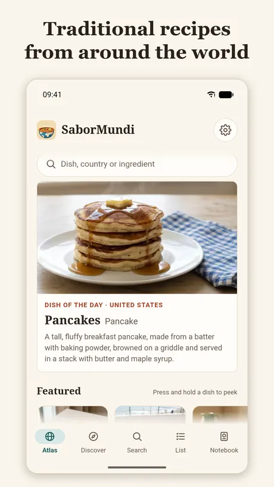
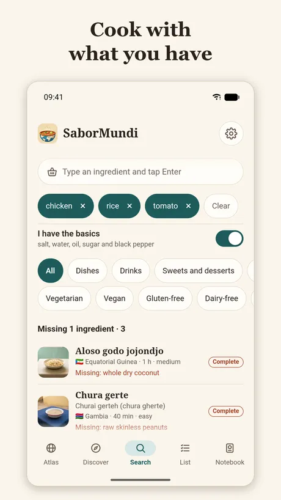

Accueil
Un plat du monde pour commencer.
L’écran d’accueil présente le plat du jour, avec sa photo et son origine. Cherchez par nom ou par description, ou parcourez les recettes mises en avant.

Recettes du monde
Des recettes traditionnelles du monde entier, chacune avec photo, ingrédients, étapes, allergènes et l’histoire du plat. Tout sur votre téléphone, sans internet et sans compte.
Téléchargement gratuit · abonnement mensuel ou annuel, ou achat unique pour tout ouvrir
L’application est disponible en portugais, en anglais et en espagnol.

Pour celles et ceux qui aiment cuisiner et découvrir un plat avant de se mettre aux fourneaux.
Accueil
L’écran d’accueil présente le plat du jour, avec sa photo et son origine. Cherchez par nom ou par description, ou parcourez les recettes mises en avant.
La recette
Chaque recette a sa photo, ses ingrédients, ses étapes, ses allergènes et l’histoire du plat. Ajustez les portions et choisissez les mesures métriques ou américaines.
Mode cuisine
En mode cuisine, l’écran affiche une étape à la fois, en grands caractères, et les minuteurs restent visibles pendant que vous cuisinez.

Lecture à voix haute
La voix de votre appareil lit la recette à voix haute : vous gardez les mains libres.

Aperçu
Certaines recettes s’ouvrent en entier gratuitement. Les autres affichent un aperçu : photo, histoire et allergènes.

J’ai à la maison
Indiquez ce que vous avez dans votre cuisine : SaborMundi affiche les recettes réalisables et ce qui manque. Filtrez par régime : végétarien, végan, sans gluten, sans produits laitiers.

Liste de courses
Réunissez les ingrédients des recettes choisies dans une liste de courses classée par rayon, et ajoutez ce qu’il vous faut d’autre.

Ma cuisine
Cochez les allergènes des personnes qui vivent avec vous. Toute recette qui en contient affiche une alerte en haut et met l’ingrédient en évidence.

Le téléchargement est gratuit, et certaines recettes s’ouvrent en entier pour essayer l’application. Un abonnement mensuel ou annuel, ou un achat unique, ouvre toutes les recettes.
Les écrans de l’application (en anglais).






Sans compte, sans publicité et sans collecte de données. SaborMundi ne se connecte jamais de lui-même à internet : ce que vous cochez reste sur votre appareil et n’en sort que si vous partagez une recette ou la liste, ou exportez la sauvegarde.
Le téléchargement est gratuit et certaines recettes s’ouvrent en entier sans frais. Les autres affichent un aperçu avec photo, histoire et allergènes. Un abonnement mensuel ou annuel, ou un achat unique, les ouvre toutes. Il n’y a pas de publicité.
Oui. Les recettes, la recherche, le mode cuisine et la liste de courses fonctionnent téléphone hors ligne. Seul l’achat passe par la boutique.
En portugais, en anglais et en espagnol.
Non. Il n’y a aucune inscription. Pour transférer vos données sur un autre téléphone, exportez la sauvegarde.
Les recettes indiquent les principaux allergènes et des conseils de sécurité, mais les marques et les ingrédients varient. Vérifiez toujours l’étiquette de chaque produit et suivez l’avis de votre médecin ou diététicien.